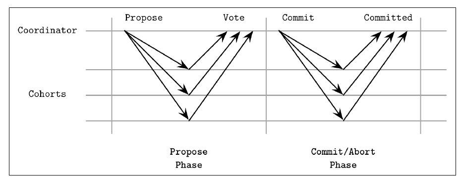
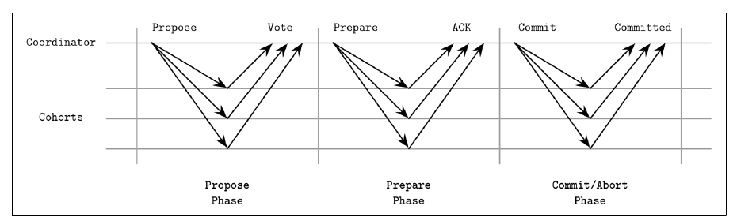
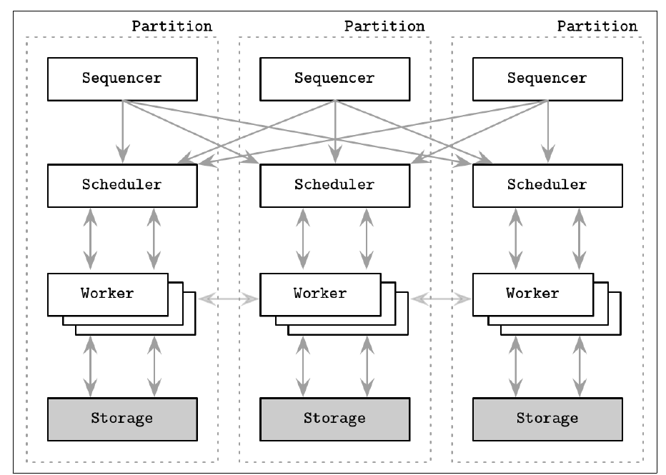
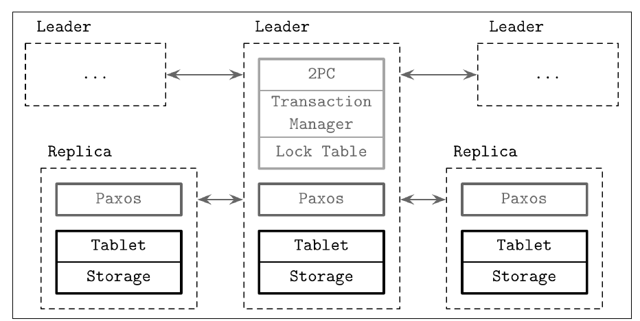

Chapter 13 · pp. 257–278
Distributed Transactions
Database Internals, 1st Edition
Chapter 11's consistency models cover single operations, but databases often need several operations to happen atomically, across partitions and nodes (p. 257). This chapter is the distributed counterpart of Ch. 5. Node-local concurrency control can't solve multipartition transactions, which need coordination between servers, distributed commit and rollback (p. 257). A transaction must be recoverable: if it fails, aborts or times out, it is rolled back completely, on every node involved (p. 258).
The chapter covers:
- Atomic commitment:
- Two-phase commit (2PC), which blocks if the coordinator fails after collecting votes;
- Three-phase commit (3PC), which avoids blocking under synchronous assumptions but can split brain under partitions (pp. 258–266).
- Two modern designs (pp. 266–270):
- Calvin (FaunaDB): a sequencer fixes a deterministic order of transaction batches before execution;
- Spanner (CockroachDB, YugaByte DB): 2PC over Paxos groups, ordered by TrueTime, giving external consistency.
- Partitioning: range sharding, hash-mod-N and consistent hashing (pp. 270–271).
- Percolator (TiDB): snapshot isolation on Bigtable with client-driven 2PC (pp. 272–274).
- Coordination avoidance: invariant confluence and RAMP transactions with read-atomic isolation (pp. 275–277).
The chapter’s own outline (from the book’s table of contents)
- Making Operations Appear Atomic — p. 258
- Two-Phase Commit — p. 259
- Cohort Failures in 2PC — p. 261
- Coordinator Failures in 2PC — p. 262
- Three-Phase Commit — p. 264
- Coordinator Failures in 3PC — p. 265
- Distributed Transactions with Calvin — p. 266
- Distributed Transactions with Spanner — p. 268
- Database Partitioning — p. 270
- Consistent Hashing — p. 271
- Distributed Transactions with Percolator — p. 272
- Coordination Avoidance — p. 275
- Summary — p. 277
From the book
Introduction
Transactions are state transitions from A to B with no predetermined state attached, so they can be reordered and retried (p. 257). A history is serializable if its dependency graph equals that of some serial history (p. 257). Even a money transfer is hundreds of small steps, so a transaction must execute first and become visible only afterwards (p. 258). Nodes fail and recover independently, yet atomicity must hold across all of them: changes reach every involved node durably, or none (Lampson) (p. 258).
From the book
Making operations appear atomic
Atomic commitment algorithms allow no disagreement. One "no" vote prevents the commit, and failed processes must reach the same conclusion as the rest. That's why they don't work with Byzantine failures (p. 258). The question is only whether to execute the proposed transaction: cohorts can't influence or replace it (p. 258).
The algorithms leave the semantics of prepare, commit and rollback to implementers (p. 259):
- when data is ready to commit, one pointer swap away from public;
- how to commit so results become visible as quickly as possible;
- how to roll back when the decision is to abort.
Users include MySQL (distributed transactions) and Kafka (producer-consumer interaction) (p. 259). The transaction manager schedules, coordinates, executes and tracks transactions, and ensures commits happen in all partitions and for all replicas (p. 259).
From the book
Two-phase commit
There's a coordinator (leader), which holds state, collects votes and is the reference point, and cohorts, usually partitions over disjoint datasets. Everyone keeps a local log of each step (p. 260). The coordinator can be the node that received the request, chosen at random, elected, assigned manually or fixed, and the role can be transferred (p. 260).


| Phase | What happens (pp. 260–261) |
|---|---|
| Prepare | The coordinator sends Propose. Each cohort decides whether it can commit its part, executes the transaction locally into a precommitted state, and votes yes or no. Votes are persisted in the coordinator's log, and each cohort keeps a copy of its own decision |
| Commit/abort | If any cohort votes no, everyone gets Abort. Only if all voted yes does everyone get Commit |
Every step is written to durable storage so state can be rebuilt after local failures and replayed for others. By commit time, the transaction's contents are already durable on every node (p. 261).
Two-phase commit
Cohort failures in 2PC
- A cohort fails during propose: the coordinator can't collect a unanimous yes and aborts. One node's failure blocks transactions, which hurts availability. Spanner runs 2PC over Paxos groups instead of individual nodes to fix this (pp. 261–262).
- A cohort fails after voting yes: on recovery it must learn the actual decision, usually from the coordinator's persisted decision log, before serving requests, because others may have caused an abort (p. 262).
- Lost messages: waits could last forever, so the coordinator times out during propose and aborts (p. 262).
Two-phase commit
Coordinator failures in 2PC
- A cohort misses the decision: it can learn it from peers' logs or a backup coordinator. Replicating the decision is safe because it is unanimous: a commit on one cohort means all commit (pp. 262–263).
- The coordinator fails after collecting votes but before broadcasting the outcome: cohorts have promised to wait for its command and are left uncertain (Figure 13-4). If it never recovers, a replacement must collect votes again. 2PC is a blocking atomic commitment algorithm (p. 263).
MySQL, PostgreSQL and MongoDB use 2PC; MongoDB's documentation as of v3.6 describes only transaction-like semantics (note 2). It's popular because it's simple and has few round trips, but it needs good recovery and backup coordinators (pp. 263–264).
From the book
Three-phase commit
3PC adds a step plus timeouts on both sides, so cohorts can commit or abort without the coordinator. It assumes a synchronous model with no communication failures (Skeen; Babaoglu and Toueg); the fine print assumes a highly reliable network without partitions (p. 259, note 1; p. 264).


| Phase | What happens (pp. 264–265) |
|---|---|
| Propose | Send the value and collect votes. A coordinator crash with a timeout, or any "no", means abort |
| Prepare | Tell cohorts the vote result: Prepare if all voted yes, else Abort. Cohorts that don't reach the prepared state abort on timeout |
| Commit | Once all cohorts are prepared and acknowledged, the transaction commits even if either side fails, because everyone shares the same view. The commit message resets timeouts and finishes the round |
Three-phase commit
Coordinator failures in 3PC
Transitions are coordinated: nobody advances until everyone finishes the previous phase. A cohort that hears nothing before passing the prepare phase aborts on timeout; after it, it commits (p. 265). This avoids 2PC's blocking (p. 265). The worst case is a network partition during prepare (Figure 13-6): prepared cohorts commit after their timeout while cut-off ones abort, a split brain in which everyone followed the protocol (pp. 265–266). Higher message overhead, possible contradictions and poor behaviour under partitions are probably why 3PC is rarely used (p. 266).
Try it
2PC vs 3PC under failures
Open full screen ↗ · the simulation is the vault’s own model of the mechanism the book describes.
From the book
Distributed transactions with Calvin
Have replicas agree on execution order and transaction boundaries before acquiring locks. Node failures then don't abort transactions, because other replicas run the same transactions (p. 266). 2PL and OCC have no deterministic order, so execution needs coordination. With deterministic order, all replicas get identical inputs and produce equivalent outputs (Thomson et al.; FaunaDB) (p. 266).


The sequencer collects transactions into 10 ms epochs and replicates the batches (via Paxos or a leader); the scheduler executes them deterministically, in parallel where safe; each worker (1) analyzes read and write sets, (2) reads local data and forwards it, (3) receives remote reads, and (4) executes and persists (pp. 266–267).
- The sequencer is the entry point for all transactions and fixes a global input order. Time is split into epochs, about 10 ms batches in the paper, which also serve as replication units (pp. 266–267).
- The scheduler executes parts of transactions in parallel while preserving the sequencer's serial order. Replicas never talk to the sequencer again (p. 267).
- Each transaction declares a read set and a write set. Calvin doesn't natively support transactions that need extra reads to determine those sets (p. 267).
- The worker's four steps: (1) find local read-set records and the active participants, which hold write-set records; (2) read local records and forward them to active participants; (3) active participants receive remote reads; (4) execute and persist locally. Results aren't forwarded, because every participant computes them (p. 267).
- Sequencers agree on each batch through Paxos, or through asynchronous replication with a leader, which has lower latency but costlier recovery (p. 267).
From the book
Distributed transactions with Spanner
Spanner is often contrasted with Calvin. Calvin reaches consensus on sequencers; Spanner runs 2PC over per-shard consensus groups. Derivatives include CockroachDB and YugaByte DB (p. 268). TrueTime is a high-precision wall-clock API that returns an uncertainty bound, so operations can deliberately wait it out (p. 268).
| Operation | How (pp. 268–269) |
|---|---|
| Read-write transaction | Locks, pessimistic concurrency control, a leader replica |
| Read-only transaction | Lock-free, at any replica. A leader is needed only to read at the latest timestamp |
| Snapshot read | Consistent at a timestamp; records are versioned by commit time |
Architecture (Figure 13-8, p. 269):


- A spanserver holds tablets, each with a Paxos state machine. Replica sets form Paxos groups, the unit of placement and replication, each with a long-lived leader (Multi-Paxos).
- Writes go through the group leader; reads can be served by any up-to-date replica.
- The leader holds a lock table for 2PL and a transaction manager for multishard transactions. Snapshot reads skip the locks.
Multishard commit (pp. 269–270):
- Group leaders coordinate a 2PC for consistency and use 2PL for isolation. Using Paxos groups as cohorts keeps 2PC available when some members are down; within a group, only the leader is contacted.
- Each participant leader acquires write locks, picks a prepare timestamp greater than any previous transaction's, and logs a prepare entry through Paxos.
- The coordinator picks a commit timestamp greater than every prepare timestamp and logs it through Paxos. It then waits until that timestamp is in the past (the commit wait), so clients only ever see results with past timestamps.
- It sends the timestamp to the client and the leaders, which log the commit in their groups and release their locks.
Single-shard transactions skip the transaction manager: the Paxos group and lock table are enough (p. 270). The result is external consistency, with real-time properties equivalent to linearizability: if T1 commits before T2 starts, ts(T1) < ts(T2) (p. 270). Multipartition transactions cost an extra 2PC round compared with Calvin (Abadi) (p. 270).
From the book
Database partitioning
Partitioning divides data into manageable segments. The simplest scheme splits it into ranges, each owned by one replica set, and clients or coordinators route requests by the routing key. This is sharding (p. 270).
- Size partitions by load and value distribution: split hot ranges and dense ranges. Zip codes, for example, are unevenly populated (pp. 270–271).
- When nodes join or leave, relocate the data before updating cluster metadata and rerouting. Some systems auto-shard using placement algorithms driven by load and data size (p. 271).
- Hashing keys reduces range hotspots, because neighbouring keys land on different replica sets (p. 271).
- hash(v) mod N is simple, but changing N to N′ remaps most keys, so most of the data moves (p. 271).
Database partitioning
Consistent hashing
Cassandra and Riak map hash values onto a ring that wraps around. Each node sits at a position and owns the range from its predecessor's position to its own (p. 271). A join or leave affects only its immediate neighbours. With K keys and n nodes, only about K/n keys move on average (Karger et al.) (p. 271).
From the book
Distributed transactions with Percolator
Snapshot isolation (SI) (p. 272):
- Every read in a transaction comes from a snapshot of everything committed before its start timestamp.
- On a write-write conflict on the same cell, the first committer wins.
- SI prevents read skew: with x + y = 100, T1 reads x = 70; T2 writes x = 50 and y = 50 and commits; T1 then reads y. Under SI it sees the old y, not 50, so its values stay consistent (Berenson et al.).
- Its properties: repeatable reads of committed data, values consistent at a timestamp, and conflicting writes aborted and retried. Reads need no locks (p. 272).
- It is not serializable: transactions that write disjoint cells can still cause write skew (p. 272).
Percolator is a transactional library on top of Bigtable (pp. 272–273).
- Data, write metadata (committed data locations) and locks live in separate columns. Bigtable's conditional mutations make each read-modify-write a single RPC (pp. 272–273).
- A timestamp oracle issues cluster-wide monotonic timestamps, consulted twice: at start and at commit. Writes are buffered and committed with a client-driven 2PC (p. 273).
| Step | Figure 13-9 (pp. 273–274): credit $150 from Account2 to Account1 |
|---|---|
| a. Initial | TS1 is the latest data for both accounts; no locks |
| b. Prewrite | Lock every written cell and mark one as primary, used for recovery. Abort if a later write exists or any lock is held |
| c. Commit | Release locks primary-first, replacing each lock with a write record pointing at the new data timestamp |
If the client dies mid-commit, a later transaction that finds an incomplete state releases the primary lock and commits, or commits the contents if the primary lock was already released. Locks are exclusive and transitions atomic (p. 273). TiDB follows the Percolator model and is MySQL-compatible (p. 274).
From the book
Coordination avoidance
Bailis et al.: operations that are invariant confluent (I-confluent) need no coordination. Any two invariant-valid but diverged states can be merged into a valid state, so you define a merge function alongside each operation (p. 275). Transactions run against local snapshots, with any state from other partitions made available locally. Committed changes are migrated and merged into other nodes' snapshots (p. 275).
| Required property | Meaning (p. 275) |
|---|---|
| Global validity | Invariants hold for merged and diverged committed states; no transaction observes an invalid state |
| Availability | If all nodes holding state are reachable, a transaction commits, or aborts if committing would violate an invariant |
| Convergence | Without further transactions or indefinite partitions, nodes reach the same state |
| Coordination freedom | Local execution doesn't depend on operations other nodes perform |
RAMP (Read-Atomic Multi-Partition) transactions (pp. 275–277):
- MVCC plus metadata about in-flight writes. A reader that overlaps a writer can detect it and fetch the missing versions in an extra round.
- Synchronization independence: one client's transactions never stall, abort or force waits on another's. Partition independence: clients contact only the partitions their transaction involves (p. 276).
- Read atomic isolation: no in-flight, uncommitted or aborted changes are visible; a transaction's updates are seen in full or not at all, which rules out fractured reads. It gives atomic visibility without mutual exclusion (p. 276).
- Local commit decisions must be globally valid: by the time a write is visible on one partition, the same transaction's writes are visible on every involved partition (p. 276).
- Writes are installed with a two-phase prepare (place writes invisibly) and commit/abort (publish atomically across partitions) (p. 276).
- Several versions coexist: the latest, in-flight and stale. Stale versions are kept only for in-progress reads (p. 277).
From the book
Summary
2PC and 3PC are simple but limited. 2PC needs the coordinator, or a substitute, alive for the whole commit. 3PC relaxes that but splits brain under partitions (p. 277). Modern systems build distributed transactions on consensus: Calvin and Spanner both use Paxos. Consensus is more involved but more fault-tolerant, and decouples decisions from their initiators, letting participants decide on a value rather than whether to accept one (Gray and Lamport) (p. 277).
Recap
Trade-offs at a glance
| 2PC | 3PC | Calvin | Spanner | Percolator | |
|---|---|---|---|---|---|
| Ordering | Coordinator | Coordinator | Sequencer epochs | TrueTime timestamps | Timestamp oracle |
| Blocking on coordinator failure | ✓ blocks | ✗ (assumes no partitions) | ✗ (replicated sequencer) | ✗ (Paxos groups) | Client recovery via primary lock |
| Partition behaviour | Blocks | Split brain possible | Consensus on batches | Consensus per shard | Bigtable-dependent |
| Cost | 2 rounds | 3 rounds | Up-front read/write sets | Commit wait + 2PC across shards | 2 oracle calls + 2PC |
| Isolation | Depends on local CC | — | Serializable (deterministic) | External consistency | Snapshot isolation |
| Partitioning | Keys moved when n changes | Hotspots |
|---|---|---|
| Range | Split/merge ranges | Sequential keys cluster |
| hash mod N | Almost all | Spread |
| Consistent hashing | ≈ K/n | Spread; vnodes even out the load |
Recap
Key takeaways
- Atomic commitment is unanimous. A single "no" vote aborts the transaction, so these protocols can't tolerate Byzantine participants (p. 258).
- Cohorts only vote. They can't change or propose alternatives to the transaction (p. 258).
- 2PC's central promise: once a cohort votes yes, it can't go back. Only the coordinator can abort (p. 262).
- 2PC blocks on coordinator failure. Cohorts that have voted yes can't decide alone if the coordinator dies before announcing the outcome (p. 263).
- 3PC adds a prepare round and cohort timeouts, but a partition during prepare lets some cohorts commit and others abort (pp. 264–266).
- Calvin removes coordination during execution. Every replica gets the same ordered inputs and produces the same outputs; it needs read and write sets known up front (pp. 266–267).
- Spanner waits out clock uncertainty before revealing a commit, so if T1 commits before T2 starts, ts(T1) < ts(T2) (pp. 268–270).
- Consistent hashing moves about K/n keys when n nodes change, against almost all keys with hash mod N (p. 271).
- RAMP's read atomic isolation: all of a transaction's writes are visible, or none, which rules out fractured reads, without mutual exclusion (p. 276).
Practice
Check yourself
Questions and answers are the vault's, written from the notes above; answers cite the book's pages.
1Why can't atomic commitment protocols tolerate Byzantine participants?Show answer
They require unanimity. A participant that lies about its vote or decides arbitrarily contradicts that unanimity (p. 258).
2What is the central promise a 2PC cohort makes?Show answer
Once it votes yes, it won't go back on that decision. Only the coordinator can abort the transaction from then on (p. 262).
4How can 3PC end in a split brain?Show answer
During a partition in the prepare phase, prepared cohorts commit after their timeout while cut-off cohorts that never got Prepare abort after theirs, all according to the protocol (pp. 265–266).
5Why don't Calvin replicas need to exchange execution results?Show answer
The sequencer gives every replica the same ordered input batches, and execution is deterministic, so each computes and persists the same results locally (p. 267).
6What does Spanner's commit wait achieve?Show answer
The coordinator waits until the chosen commit timestamp has passed, given TrueTime's uncertainty, before revealing it. Clients therefore never see results timestamped in the future, which gives external consistency (p. 270).
7Ten nodes become eleven. Roughly what fraction of keys moves under hash mod N, and under consistent hashing?Show answer
Under mod N, most keys (≈ 10/11) change owner. Under consistent hashing, only about K/n, the keys in the range the new node takes over (p. 271).
8What is the role of Percolator's primary lock?Show answer
It is the commit point used for recovery. If a client dies mid-commit, a later transaction checks the primary lock: if it's released, the transaction committed and its remaining locks are rolled forward; otherwise it can be cleaned up (pp. 273).
9What anomaly does RAMP's read atomic isolation rule out?Show answer
Fractured reads: seeing only some of another transaction's writes. All of a transaction's updates become visible together or not at all (p. 276).
Supplement
Beyond the book
Vault supplement — not from the book.
- Commit wait in numbers. Spanner's paper reports TrueTime uncertainty (ε) usually between 1 and 7 ms, so commit wait adds about 2ε per read-write transaction. CockroachDB uses NTP-bounded hybrid logical clocks instead and handles uncertainty by restarting reads rather than always waiting.
- Virtual nodes. With a single position per node, consistent hashing leaves ownership uneven. Cassandra's
num_tokensplaces each node at many points on the ring, so the K/n property also holds for load. The consistent-hashing lab measures keys moved and balance with and without vnodes. - 2PC's coordinator problem in practice. The XA standard and PostgreSQL's
PREPARE TRANSACTIONleave "in-doubt" transactions holding locks until an operator or transaction manager resolves them: the blocking state on p. 263. See DDIA Ch. 8.
Next steps
Keep going
Run it
How much data moves when a node joins? This experiment assigns 100,000 keys to 10 nodes, adds an 11th, and counts the keys that change owner. It compares three schemes: hash mod N, a consistent-hashing ring with one position per node, and a ring with 100 virtual nodes per node. It also reports how evenly the keys are spread afterwards.
cd books/database-internals/lab/13-consistent-hashing
python3 consistent_hashing.pyConnections
- Run it: Consistent hashing vs mod N — assigns 100 000 keys to 10 nodes, adds an 11th, and counts how many keys move under
hash mod N, a plain ring and a ring with virtual nodes, plus the per-node load spread. - Related chapters: 5. Transaction Processing and Recovery (2PL, snapshot isolation, MVCC), 11. Replication and Consistency (linearizability, external consistency), 14. Consensus (Paxos under Calvin and Spanner), 10. Leader Election (per-partition leaders).